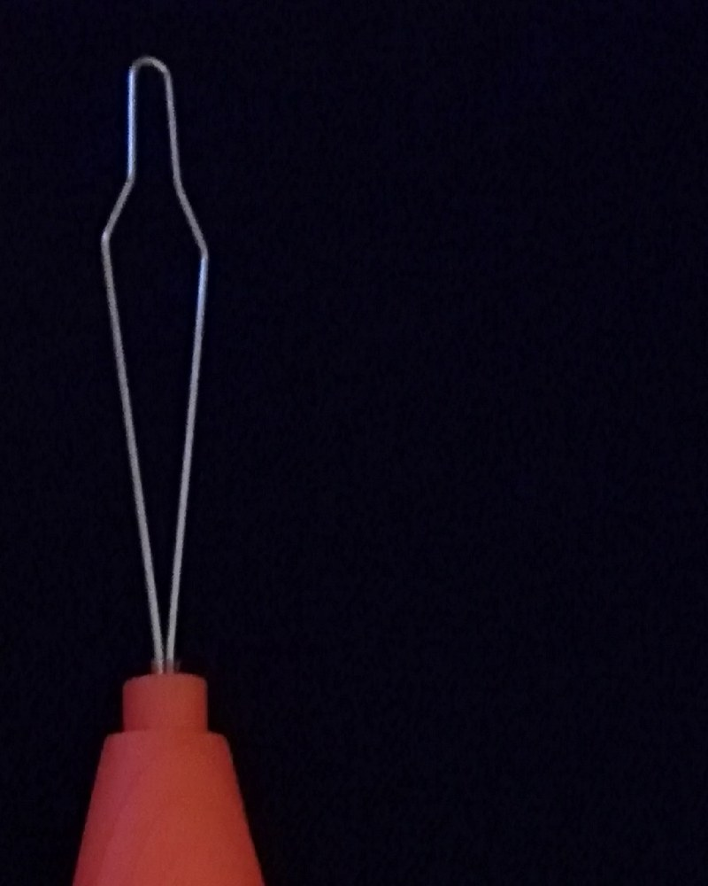

Millega sa abi vajad?
Vali, mis on praegu raske. Näitame, milline tegevusterapeut sobib ja mis edasi saab.
Oled tegevusterapeut? Oled keskus või filiaal?
Sulle võiks sobida
Jäta kontakt ja meie võtame sinuga ühendust, kui sinu piirkonnas on sobiv tegevusterapeut. Sina ei pea ise helistama. Platvorm alles käivitub, nii et terapeute siin veel näha ei ole.
Kuidas abi sinuni jõuab
Sina ei pea helistama. Meie võtame ühendust.
-
Võta hetk.
Juba see, et siin oled, on esimene samm. Kõike ei pea kohe teadma.
-
Vali, mis on raske.
Üks valik lehe alguses on täiesti piisav. Kui ei oska öelda, vali „Ei oska veel öelda”.
-
Jäta oma kontakt.
Nimi, telefon või e-post ja maakond. Rohkem pole vaja.
-
Meie võtame ühendust.
Kui sinu piirkonnas on sobiv tegevusterapeut, võtame sinuga ise ühendust ja lepime koos kokku esimese kohtumise.
Platvorm alles käivitub, nii et sobiva terapeudi leidmine võib võtta veidi aega.
Otsi oma piirkonnast
Siia ilmuvad tegevusterapeudid ja keskused, kui nad liituvad. Praegu on nimekiri veel tühi.
Tegevusterapeutide erialad
Tegevusterapeut aitab sul jälle hakkama saada asjadega, mida igapäevaselt teed: söömise, riietumise, pesemise, kooli või tööga. Paljud terapeudid tegelevad peamiselt ühe valdkonnaga.
-
Lapsed ja areng
Lastele, kellel on raske mängida, süüa, riietuda, kirjutada või koolipäevaga toime tulla. Terapeut harjutab koos lapsega ja annab vanemale nõu, kuidas kodus jätkata.
-
Taastusravi pärast insulti või traumat
Täiskasvanutele, kes pärast insulti, luumurdu, operatsiooni või muud tervisemuret õpivad uuesti pesema, riietuma ja süüa tegema.
-
Eakad ja kodus toimetulek
Eakatele ja nende lähedastele. Kuidas kodus turvaliselt liikuda, pesta ja süüa teha, et saaks võimalikult kaua ise hakkama.
-
Käeteraapia
Kui käsi või sõrmed ei tööta nagu varem, näiteks pärast vigastust, operatsiooni või liigesehaiguse tõttu. Harjutused, vajadusel lahas ja võtted, mis teevad igapäevatöö käele kergemaks.
-
Abivahendid ja kodu kohandamine
Terapeut aitab valida sobiva abivahendi ja soovitab, mida kodus muuta: käetoed, lävepakud, vannituba, köök.
-
Töövõime ja tööle naasmine
Kui pärast haigust või vigastust on raske tööle tagasi minna. Vaatate koos, mida töö nõuab ja mida saab töökohal või tööülesannetes muuta.
-
Trauma-teadlik tegevusteraapia
Terapeut arvestab, et varasem raske kogemus võib mõjutada igapäevast toimetulekut. Töö käib ikka igapäevaste tegevustega, rahulikus tempos ja sinu otsuste järgi.
-
Ei tea, milline sobib?
Vali lehe alguses, mis on raske, ja näitame suuna.
Vali, millega vajad abi
Abivahendid
Platvormi asutajad Kristel ja Terje aitavad leida abivahendeid, mis teevad igapäevased toimetused lihtsamaks. Siin ei ole e-poodi. Kirjuta, mis on raske, ja nad soovitavad, mis võiks sobida.
Söömiseks 
Riietumiseks 
Koju
Fotod: MART PRODUCTION / Pexels; Mautpreller / Wikimedia Commons, CC BY-SA 4.0; Simon Speed / Wikimedia Commons, CC0.
Oled tegevusterapeut?
Registreeru, kui otsid tööd keskuses või pakud teenust ise. Ootame kõigi erialade terapeute.
- Täidad vormi. Märgid, millega tegeled ja kus töötad.
- Kinnitad isiku Smart-ID või Mobiil-ID-ga.
- Kontrollime kvalifikatsiooni. Küsime kutsetunnistuse või muu dokumendi, mis näitab, et sul on õigus tegevusterapeudina töötada.
- Võtame ühendust. Alles pärast seda näevad sinu profiili abi otsijad ja keskused.
Sinu telefoni ja e-posti ei näidata kellelegi ilma sinu loata.
Keskustele ja filiaalidele
Registreerida saab nii suurem keskus kui ka väike filiaal. Filiaal seotakse oma peakeskusega, et inimene näeks, kuhu ta pöördub.
- Täidate vormi. Keskuse andmed ja erialad, millega tegelete.
- Esindaja kinnitab isiku Smart-ID või Mobiil-ID-ga.
- Kontrollime andmed üle ja küsime vajadusel lisa.
- Keskus ilmub lehele siis, kui olete sellega nõus. Inimesed leiavad teid oma mure ja piirkonna järgi.
Kui teil on mitu filiaali, täitke vorm iga filiaali kohta eraldi.
Koolitused terapeutidele ja keskustele Tulekul
Tahame korraldada koolitusi tegevusterapeutidele ja keskuste meeskondadele. Teemad paneme kokku koos nendega, kes liituvad, et need oleksid päriselt vajalikud.
Kuupäevi ja teemasid veel ei ole. Jäta oma e-post ja anname teada, kui esimesed koolitused on paigas.
Tagasiside
Oled tegevusterapeut või keskuse esindaja? Kirjuta, mis on segane, mis jääb puudu või mida võiks teha teisiti.